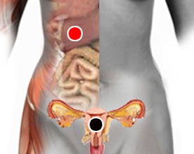

Embarazo molar
Par
útero - hígado

Generalidades:
El embarazo molar también llamado Enfermedad trofoblástica gestacional, mola hidatiforme o simplemente mola; se debe a un error genético durante el proceso de fertilización. En lugar de dar lugar a un feto se desarrolla un tejido anormal, a veces con aspecto de racimo de uvas que crecen aceleradamente dentro del útero. En otros casos tan solo es el crecimiento de la misma placenta, esto se da cuando un espermatozoide fecunda a un óvulo vacío. En raras ocaciones un embrión puede comenzar su desarrollo junto a la mola, en este caso no logrará desarrollarse el feto, ya que será absorbido. El Embarazo molar es poco frecuente, se da aproximadamente en 1 de cada 1000 embarazos.
Síntomas
Pueden ser nausea, vómito, sangrado, preclampsia, trastornos de tiroides. Los niveles hormonales se alteran por lo que puede confundir con embarazo. Más común en mujeres mayores de 40 años o en quienes anteriormente hay padecido esta condición.
Casi siempre provoca aborto expontáneo, o tal vez se requiera intervención médica (aspiración, raspado, dilatación y evacuación) así como dar seguimiento al caso para evitar que las células remanentes puedan resultar en cancer. El apoyo psicológico también es importante.